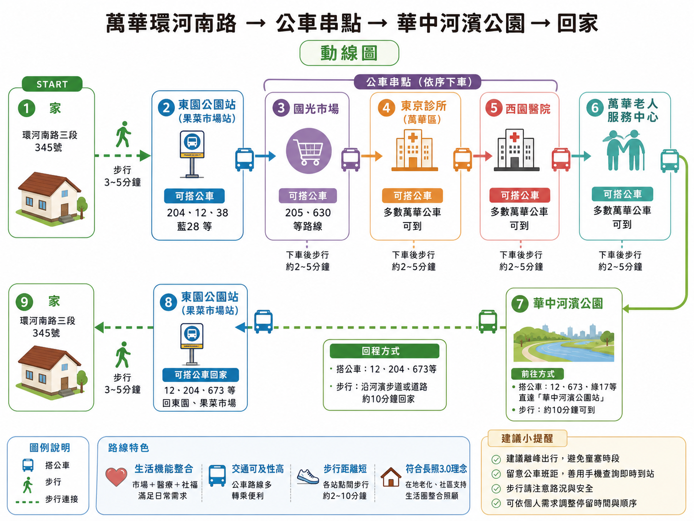

📸 家訪現場紀實

個案生活面談

生活環境觀察

輔具位置評估
🚌 生活動線模擬地圖 (ChatGPT 生成)

「即時、溫暖、在地」— 讓科技成為長輩最貼心的拐杖
以萬華區環河南路三段的張吉雄先生為核心，展現長輩對自立生活的堅持。儘管面對無電梯公寓的挑戰與體力下滑，他們仍每日親自採買、烹飪，維持與社區的互動。這份數位誌旨在結合資源導航與長照知識，支持長輩在熟悉的土地上安心老去。
個案生活面談
生活環境觀察
輔具位置評估

卡片內建導航按鈕，點擊可直接開啟 Google 地圖
為家屬整理的 10 大照顧難題與正確解答